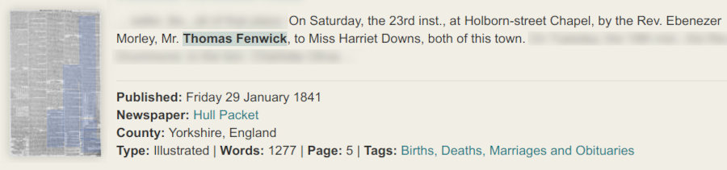
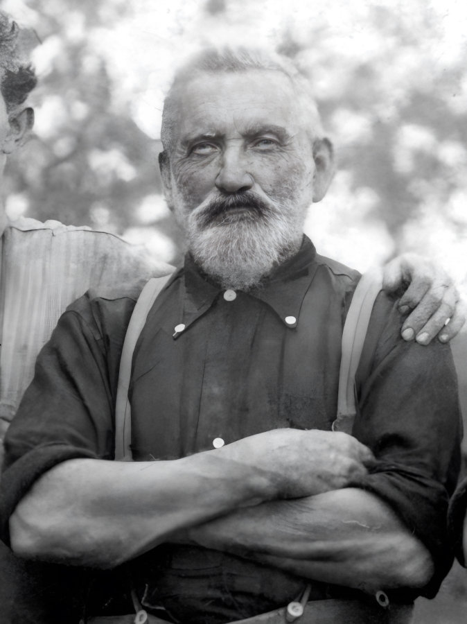
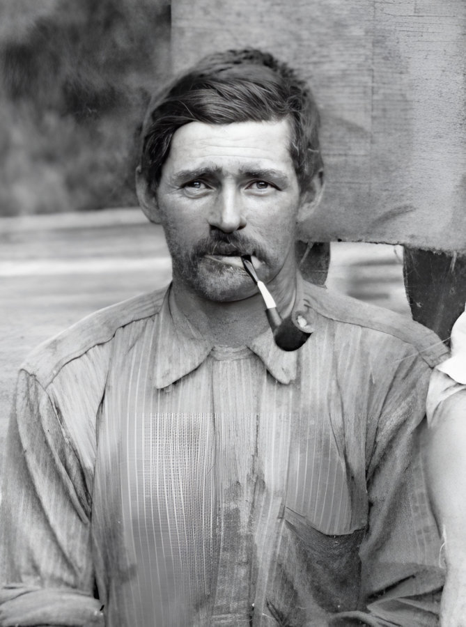
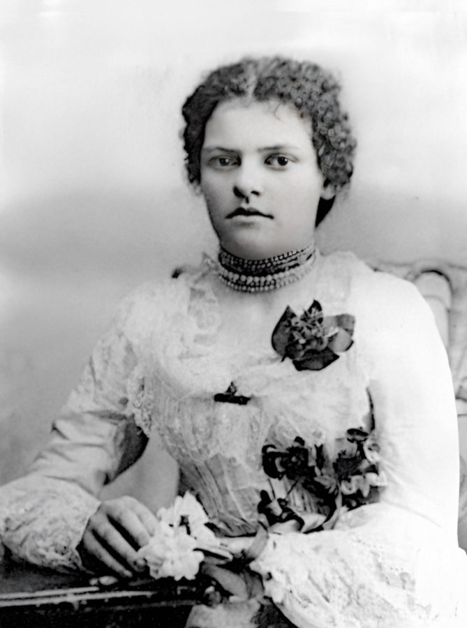
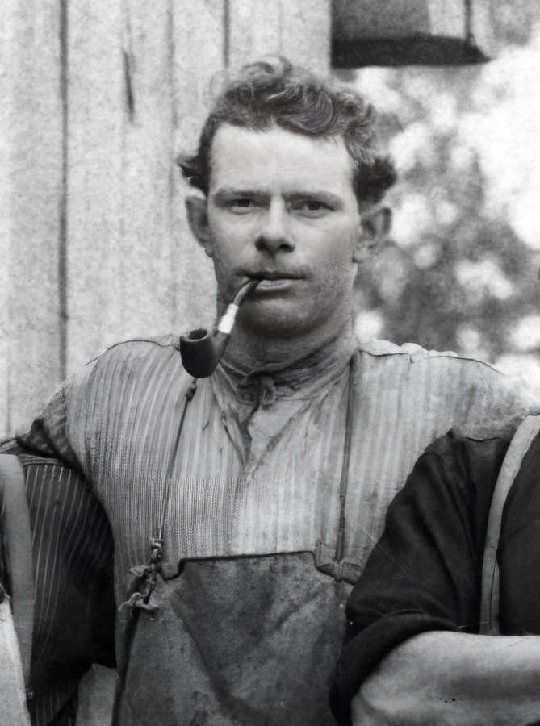
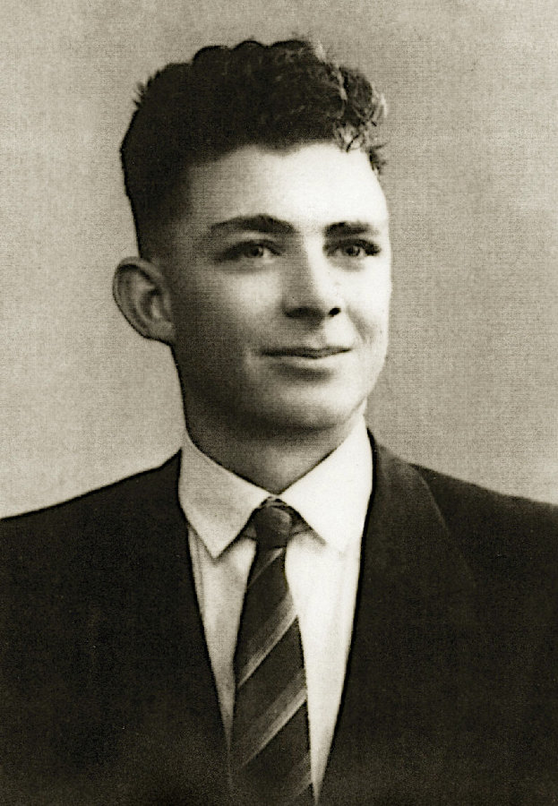
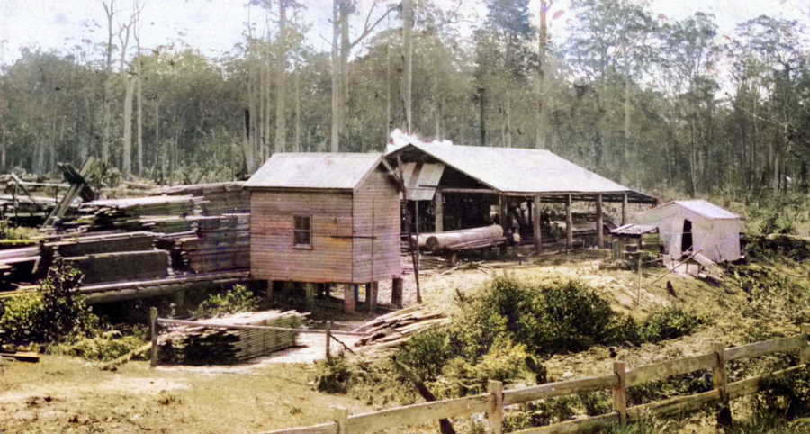
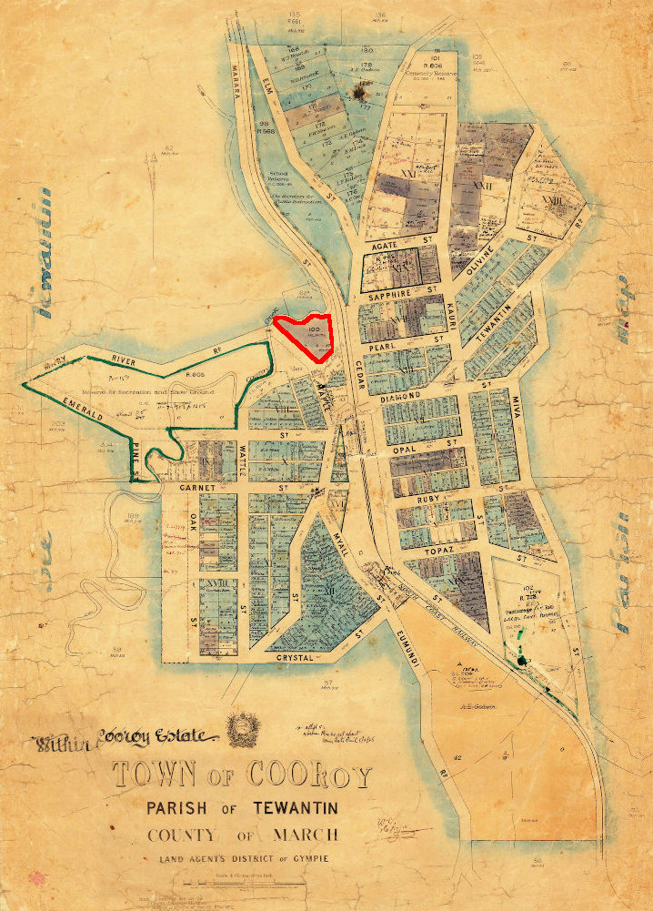

-

The Fenwicks
variously spelt Fenwyke, Fenwicke, Fennick or Fenwick
From the Fens of the North
The Fenwicks are said to have descended from Saxons who made their home in the fens of the ancient kingdom of Northumbria. The fens lay in lands which sprawled across both England and Scotland, known closer to the border as 'The Marches', from an old Frankish word for border territory. Needless to say, the Scots on one side and the English on the other, were sworn enemies. Countless attacks, often very brutal, accompanied by desperate raids and rampaging destruction led to the Marches on both sides of the border gaining a reputation as being treacherous and lawless places.
Reivers raid on Gilnockie Tower
from an original drawing by G. CattermoleBorder Reivers, the Stuff of Nightmares
In order to counteract the escalating unrest, Scotland and England appointed wardens as overlords. These wardens in turn appointed sheriffs and the Fenwicks filled these offices with great ardour. The perpetrators of the plundering were dubbed 'Border Reivers' by Sir Walter Scott in his Minstrelsy of the Scottish Border in an attempt to idealise these lawless clans of evil-doers.
The Border Papers
As unusual as it was for the time, records were nonetheless kept of every skirmish, battle, raid, theft, murder, vengeful attack and so on. The majority of these records occurred as letters passing between powerful people. Eventually the letters were bound together into a few volumes called The Border Papers. The Fenwicks and their activity in the marches are therefore rather well documented and make for a good read. From going over their personal correspondence as well as looking at other people's comments about them, it can be seen that they were not only very forthright by nature and indignant over the situation, they were also not spared from being the victims of savage attacks.
Fenwick to [Huntingdon] Letter dated 1593. Oct. 14.
Wallington Hall
Written by Huntingdon's clerk. Indorsed : Received from Mr Fenwick of Wallington.
"I have been greatly hindered sending the certificate, as the Scots on the last day of September came into Tynedale and "reft" 60 oxen and kie and 60 sheep, besides insight goods and slew one John Yarrowe my own houshold servant. And further on Saturday the sixthe of this instant October, dyverse of the same Scottes to the nomber of two thowsand men, or thereaboutes, have about IX of the clock, in the forenoone of the same daie, runne a forrowe within England, and have taken and driven away out of Tyndall where I have chardge, aboute nyne hundreth threscore and five kie and oxen, and about a thowsand sheepe and goates, besides insight, burning an onsett and a mill, of which I doubt not your lordship hath already heard. Hoping for relief and protection for the poor subjects, and myself and other poor gentlemen hereabouts who have no other refuge or support, but by your honour's means. Wallington."
In another letter we find that the guilty parties were not short of retaliatory threats in the face of justice either:Matthew Hutton,
Bishop of Durham from 1589
The Bishop of Durham, to Huntingdon Letter dated 1595. Aug. 7.
"Whereof a great prezumpcion at the bar this presente Assizes, was publiqely shewen by one David Armstrong alias Bangtaill, a Scot, and a notorious owtlaw, who being apprehended and brought in by Mr William Fenwick of Wallington upon your lordshipes commandement, arrained and found guiltie of eight severall felonies, feared not to threaten Mr Fenwick, that though he were the best beloved gentleman of his clan, yet his heeles should be lifted and turned up to the sky for bringing him, being a Scot, to be tried here before us!"
The Raid of the Redeswire
The pure innocence of the Fenwicks is a little obscure though. The Border Reivers had a second calling after their dastardly deeds - they had an obsession over poetry and ballad writing. In one particular ballad, 'The Raid of the Redeswire' which recalls a border skirmish which occurred on the 7th of July 1675, the Fenwicks, having been summoned by the March Warden, are given a mention:
We saw, come marching ower the knows,
Five hundred Fennicks in a flock, -
With jack and speir, and bows all bent,
And warlike weapons at their will
It's possible that these lines are simply a poetic reference to the sheer number of Fenwicks all over the Marches, but in other accounts, the clan incited fear in many a foe, marching forth with yells and shouts of:
A Fenwyke!, A Fenwyke!, A Fenwyke!
The Illustrious and Distinguished Fenwicks
James Clephan in his article in North Country Lore and Legend Volume III said of the Fenwicks:They had their tower of strength in the time of Henry III, and till England passed under the sway of Henry IV, when Sir John de Fenwyke acquired Wallington by marriage with Mary, daughter of William del Strother. The older seas of the Fenwicks was then suffered to fall into decay; the stronghold became a farm house; the tower - Fenwick Tower - was pulled down in 1775Richard Melford in his late 1800's articles Men of Mark 'Twixt Tyne and Tweed' describes the Fenwicks as 'Fierce and resolute in their own character and disposition' and goes on to speak rather glowingly about descendants of the clan. In one part he says:Northumbrian history teems with them. They were established at Brinkburn and Bywell, Earsdon and Eachwick, Heddon and Kenton, Meldon and Matfen, Newcastle and Offerton, Stanton and Stamfordham, and so on, right down the alphabet of local topography to Whitton and Wallington. At one time or another members of this widely diffused family have filled every position of trust and of honour in the Northern Counties that sovereign could bestow, burgess award, or professional acquirement achieve. Bywell Hall
Bywell Hall
 Norham Castle
Norham Castle
 Wallington Hall
Wallington Hall
Yet in another place he adds:Several members of the race of Fenwick have become at various times citizens of Newcastle; a few of them have achieved distinction in the public life of the town, Nicholas Fenwick, to whom Ambrose Barnes surrendered his alderman's gown, and Vicar March dedicated his sermon, "The False Prophet Unmasked" filled the office of Sheriff in the municipal year 1678-79, and was Mayor in 1682-83 and 1697-98.
Robert Fenwick became Mayor in 1708. Nicholas Fenwick obtained the shrievalty in 1713, and was five times Mayor - 1720-21, 1726-27, 1736-37, 1746-47, and 1747-48. He contested the borough as Parliamentary candidate on three successive occasions (1727, 1734, and 1741), and in each instance was successful.
Maps showing the Saxon Homeland compared to the location of Holstein on the Jutland Peninsula
Thomas the Fenwick
The list goes on, but it does become rather interesting when considering our bloodline which migrated to Australia. Thomas Fenwick, the earliest of our Fenwick ancestors to have set foot in The Great South Land, hailed from Hull on the southern border of what was once Northumbria, the stomping ground of the Fenwicks of old. In the spirit of his forebears, Thomas was was not only an alderman but three times Mayor of Shellharbour.
Saxons in the Family
Of curious interest to our family's history are the lands of the original Saxons. They lie at the lower end of the Jutland peninsula, the northern end of which is now Denmark. Note the 'mark' in Denmark has the same origin as the 'marches' of the Fenwick lands. In the late Roman empire the term Saxon was used to denote the Germanic coastal raiders and used in the same sense as Viking is used today. The Saxons undoubtedly maintained their raiding habits in Northumbria as the basis of their Reiver activity. The original homeland of the Saxons changed names over time and eventually became Holstein, the place where another branch of the family, the Süchtings had their roots before migrating to Australia.
The Fenwicks in Australia
The Australian Fenwicks of our family started with Thomas and Harriet Fenwick, who migrated from Hull in 1844.

Kingston upon Hull in 1842, around the time when Thomas and Harriet were married there
From Kingston upon Hull and Drypool
Kingston upon Hull, now better known as 'Hull', was originally an outlying part of the hamlet of Myton, named Wyke, probably derived from the Saxon word Wic meaning dwelling place or refuge. It has been told that in the 13th century, King Edward I and his hunting party followed a hare which "led them along the delightful banks of the River Hull to the hamlet of Wyke and charmed with the scene before him, viewed with delight the advantageous situation of this hitherto neglected and obscure corner. He foresaw it might become subservient both to render the kingdom more secure against foreign invasion, and at the same time greatly to enforce its commerce" (source: J.C.Craggs, Guide to Hull, 1817). Consequently, on the 1st of April, 1299, King Edward granted it a royal charter that renamed the settlement King's town upon Hull. It's interesting to note that the 'Wyke' part was still present in the earlier spelling of the name of Fenwyke.Map showing location of Naylor's Row in Drypool
Yet to be more precise, according to the marriage record of Thomas and Harriet, both of them were living at No. 6 Naylor's Row in Drypool, which was originally a small hamlet on the other side of the river Hull from the main township. Drypool was first mentioned in the Domesday Book as Dridpole, owned by Drogo de Bevrere, and was notoriously prone to flooding. After having been raised and drained, it became farmland and consisted of the Drypool Chapel and a few houses. In the 1680s, a citadel was built on the south side and used as a garrison until 1849. The population of Drypool in 1821 had reached 1,409 and in 1837 the hamlet and its parish were both absorbed into Kingston upon Hull. From 1837 to 1898, Drypool was part of the registration district of Sculcoates which, in 1937, was itself absorbed into Hull and Holderness districts.1841 Marriage Record for Thomas Fenwick, Age 21, Blacksmith, and Harriet Downs, Age 23, both residing at 6 Naylor's Row, Drypool
1841 announcement in the Hull Packet.
"On Saturday the 23rd instant at Holborn Chapel, by the Rev. Ebenezer Morley, Mr Thomas Fenwick, to Miss Harriet Downs, both of this town".
The Holborn Chapel was built in 1830 as an 'Independent Church', presumably independent of main stream Church of England. On their migration records, Thomas and Harriet are described as Episcopalian.An old representation of the Holborn Chapel situated on the corner of Holborn Street and Holderness Road in Drypool, Hull. The building still stands, almost in its original form, but is now used as an office supplies shop.

1841 Census for Kingston upon Hull showing Thomas and Harriet both aged 20. Their ages were rounded down to a multiple of five, as required for the census.
Shipping News

THE "ROYAL SAXON" — This vessel has made one of the quickest passages of the season, only 99 days having elapsed since her leaving Cork, but her English news does not extend to so late a date as that per the Briton. Her cargo is very trifling, about a hundred hogsheads of beer being the chief article. The emigrants and vessel have a cleanly appearance, and they all seem highly pleased with the treatment received on board; there are 56 single females, 30 unmarried men, 71 children, and 94 married persons.Jane Austin, the wife of D'Arcy Wentworth but not the mother of any of his children
Assisted Passage to Australia
Three years after they were married, Thomas and Harriet migrated to Australia. They left Detport in London on March 1, 1844 and arrived in Port Jackson on June 20 the next year. The records of the ship on which they travelled, the Royal Saxon, reveal that they left London with 'Bounty' assisted passage and an agreement to employ them at the other end, namely at Captain Addison's Peterborough Estate in Illawarra. Thomas was to be employed as a Blacksmith, and 'otherwise make himself generally useful as a farm servant' for the term of 12 calendar months.Captain Addison in return agreed to pay him a yearly salary of 16 pounds sterling as well as to supply him with weekly rations of 12 pounds of beef or mutton, 20 pounds of flour, 3 pounds of sugar and 4 ounces of tea. At the time of her marriage, Harriet had no occupation but for the assisted passage on the Royal Saxon's records she is recorded as a House Servant. Only Thomas was employed at Captain Addison's Estate and not Harriet. Hopefully she knew what to do with all that mutton, beef, flour and tea, every week.The Peterborough Estate partitioned into five parts marked A to E, which were allocated to the five inheritors who drew lots to determine ownership.
The circled area indicates the location of the Lake House from where Thomas was managing the estate for Captain Addison.
The small cross-hatched area on the coast was first known as Peterborough Village and then Shellharbour Township. The whole of the area later became known as Shellharbour.
(Click on picture to see a larger version.)
The Wentworths and Peterborough Estate
The lives of Thomas and Harriet Fenwick were not only tied to the fortunes of Peterborough Estate but also directly and indirectly to the family members who inherited it, the Wentworths.The 13,050 acre estate was itself part of over 34,000 acres accrued by the self-styled wealthy and colorful colonial figure, D'Arcy Wentworth, the largest land owner in the Colony of New South Wales at the time of his death. Among other things, he was also Principal Surgeon, Chief Magistrate, Superintendant of Police and Co-founder of the Bank of New South Wales.
D'Arcy was the husband of the famous author, Jane Austin, who remained married to him, even though he had a total of twelve children to two other women. His eldest children, William, Dorset (called D'Arcy), Matthew (called John) and Martha, were born to Catherine Crowley, a convict who died in 1800. The rest of the children, George, Martha, Sophia, Robert, John, Mary-Ann, Katherine and Charles, were all born to Ann Lawes who was actually still the wife of James McNeal, whom she married when she was fifteen. Upon his death on July 5, 1827, all of D'Arcy Wentworth's properties were bound up in a rather obscure manner and held in trust to the benefit of his seven children who survived him. The part of that inheritance which is relevant here is the Peterborough Estate, which was left to five of the children as tenants in common, meaning that they couldn't inherit from one another.
Those five children were:Robertwho ran into so much debt that his shares were eventually acquired by his brothers-in-law, Towns and Addision.Marthawho married John Reddall whose son, Thomas Reddall, was a member of the Shellharbour Council alongside Thomas Fenwick.Sophiawho married Robert Towns, the owner of the Royal Saxon which took Thomas and Harriet to New South Wales. Also on board were Robert's wife Sophia Wentworth and her sister Katherine Wentworth. Robert Towns is honored by having Townsville named after him.Mary‑Annwho first married Stephen Addison, for whom Thomas was estate manager for 9 years. Mary-Ann later married Charles Hollings.Katherinewho first married Benjamin Darley, a business associate of Robert Towns. She later married William Bassett. Those two surnames appear on the Shellharbour Bassett-Darley Estate where Thomas and Harriet spent the last 20 or so years of their conjugal bliss. The government passed a special Private Act of Parliament, the Bassett-Darley Estates Act in 1877, to enable Katherine to unlock the conditions of her inheritance and sell the lands during her lifetime.
The advertisement for the Bassett-Darley Estate Land Sales at Shellharbour The red highlighted area shows where Thomas Fenwick had his farm.
(see detail on the right)Detail of the Bassett-Darley Estate Land Sales showing Thomas Fenwick's farm buildings, just east of what is now the junction of the Princes Highway and the Princes Motorway.
Peterborough, Wollongong and Shellharbour
It must have worked out well for the Fenwicks, Thomas and Harriet, on the Peterborough Estate. In the obituary for Harriet published in The Illawarra Mercury, 23 October 1894, it was stated that Thomas had been the manager of Captain Addison's estate for nine years. He conducted all the estate's business, including buying and selling, from the 'Lake House' homestead (shown circled in map above) until such time that the estate passed from Captain Addison. Thomas and Harriet then moved 10 miles north to Wollongong. That would have been about 1853 but after a few years they returned to Shellharbour, as it was then known.
For five years or so, Thomas ran a business in Wollongong with another tradesman, the Wheelwright, Octavius Pollard. Until 1858, the business traded as Fenwick and Pollard, Blacksmiths and Wheelwrights, and was situated in Crown Street, Wollongong. The premises, which included its own dwelling-house, were eventually taken over in 1859 and run by William Ahern and Thomas Allen, formerly of Howitt and Sons.
A Concise Timeline for Thomas in Shellharbour and Wollongong derived from newspaper items1845‑1853employed as Manager at Peterborough Estate, Shellharbour1845 Aprappointed as Poundkeeper, Peterborough Estate1846 Decresigned as Poundkeeper, Peterborough Estate1854‑1858absent from Shellharbour, has business in Wollongong1858 Marmember of Illawarra Liberal Political Association1859‑1874back again in Shellharbour1860 Janwhile in Shellharbour, his son breaks a leg1860 Marfounding member of Shellharbour Steam Navigation Company1860 Aprelected as Councillor of Shellharbour1863 Junat Oak Flats: "my boys are daily riding over the run, to prevent the cattle from straying"1864 Marat Oak Flats, Notice, from Manager of Fenwick & Baxter1869‑1896has farm at Stoney Range for 27yrs1870 Febelected Alderman of Shellharbour1870 Marappointed Member of the Public School Boards1871 Augin Shellharbour: "the rising ground above his house is called Stoney Range"1872 Febelected Mayor of Shellharbour1878 Aprelected Mayor of Shellharbour1883 Augappointed Magistrate of the Colony, at Shellharbour1894 Octdeath of wife Harriet1896 Maydeath of ThomasBack in Shellharbour, Thomas took up farming as well as being a council alderman for 25 years, during which time he was elected as mayor no less than three times. He also upheld the law as a magistrate, a Justice of the Peace, or J.P. for short. The farm at Stoney Range, which Thomas held for 27 years up until his death, was part of what was known as the Bassett-Darley Estate of Shellharbour. As mentioned earlier, it was one of many estates inherited, in part, by Captain Addison's wife Mary-Ann Wentworth and four of her siblings.c1870, The Shellharbour Municipal Council Aldermen
L-R: William James (Mayor), John Fraser, Thomas Fenwick,
Thomas Coughrane, William Fryer, Edward Kellalea,
John Russell, Richard Hall (town clerk and schoolteacher)
In 1871, William Fryer's son, Stephen, married Charlotte Anne Fenwick, the daughter of Thomas and Harriet
Thomas Fenwick, Esq., J.P. (1823–1896)
and Harriet Downs (1818–1894)
» Thomas Fenwick (1823–1896)
married Harriet Downs (1818–1894) in Hull, Yorkshire, England, 23.01.1841and they had the following children:
Robert Thomas Fenwick 17.07.1845 –
*Shellharbour06.03.1929
†Cooroym. Hellen Rankin in Shellharbour, 05.02.1873 Charlotte Anne Fenwick 18.08.1847 –
*Shellharbour10.07.1934
†Waverleym. Stephen Fryer in Kiama, 25.07.1871 Thomas Fenwick 23.10.1852 –
*Shellharbour11.07.1937
†Bullim. Frances Elizabeth Sharp in Dapto, 26.11.1897 William Fenwick ??.??.1855 –
*Shellharbour24.08.1932
†Randwickm. Mary Wilson in Dapto, 27.12.1877 1873 Marriage of
Robert Fenwick to Helen Rankin, in Shellharbour
(Announcement in the Kiama Independent)1897 Marriage of
Thomas Fenwick and Fanny Sharp in Dapto, Nov 26
Helen (Rankin) Fenwick c1900 Robert Thomas Fenwick c1907Robert Thomas Fenwick (1845–1929)
and Hellen Rankin (1850–1940)
» Robert Thomas Fenwick (1845–1929)
married Hellen Rankin (1850–1940) in Shellharbour, 05.02.1873and they had the following children:
George Thomas Fenwick 21.11.1873 –
*Shellharbour24.06.1950
†Queenslandm. Mary Maud Walsh in Sydney, 1904 William David Fenwick 26.03.1876 –
*Ulmarra15.12.1932
†Brisbanem. Mary Ellis McAndrew in Wyrallah, 11.03.1908 Ethel Maud Fenwick ??.??.1878 –
*Ulmarra09.08.1966
†Graftonm. William Henry Johnston in Ballina, 18.08.1897 Frederick Robert Fenwick 26.01.1884 –
*Gundurimba04.11.1961
†Caloundram. Jessie Halling McDonald in Alstonville, 28.02.1906 Elizabeth Fenwick 18.01.1886 –
*Lismore09.09.1968
†Tewantinm. Alexander Allan McLean in Ballina, 30.01.1903 Charles Walter Fenwick 07.03.1890 –
*Lismore06.06.1973
†Cooroym. Ida Maud Mary Sivyer in Tinbeerwah, 10.09.1913  George Thomas FenwickWilliam David FenwickEthel Maud Fenwick
Frederick Robert Fenwick Elizabeth Fenwick Charles Walter Fenwick
Ethel Maud Fenwick and William Henry JohnstonCharles Walter Fenwick and Ida Maud Mary SivyerElizabeth Fenwick, aged 14Elizabeth Fenwick and Alec McLean
William David Fenwick with wife Mary and daughter VioletHarriet Doris McLean, daughter of Elizabeth (Fenwick) and Alec McLeanEthel Grace McLean, daughter of Elizabeth (Fenwick) and Alec McLean
 c1900 - Four Generations L-R Bill Johnston, Ethel (Fenwick) Johnston, Ethel's mother Hellen Fenwick, and Hellen's mother Elizabeth Rankin
c1928 - Ethel and Henry Johnston Family in Grafton
c1900 - Four Generations L-R Bill Johnston, Ethel (Fenwick) Johnston, Ethel's mother Hellen Fenwick, and Hellen's mother Elizabeth Rankin
c1928 - Ethel and Henry Johnston Family in Grafton
In the back row are the children and their spouses, from left to right, Helen May and Charles Thomas Strong and children, then Annie Isabel and Charles Henry Dickman and children, then William Alfred and Murial Pearl Johnston with children and finally the youngest sister, Margaret Agnes Johnston, who wasn't married for another few years. Charles and Ida Fenwick with Ethel and Henry Johnston
Charles and Ida Fenwick with Ethel and Henry Johnston
c1924 - Four Generations with Helen (Rankin) Fenwick and Ethel Maud (Fenwick) Johnston, both seated. Standing is Annie Isabel (Johnston) Dickman.c1938 - Four Generations with Helen (Rankin) Fenwick and Ethel Maud (Fenwick) Johnston, both seated. Standing is Helen May (Johnston) Strong
 Jessie (McDonald) and Fred Fenwick
Jessie (McDonald) and Fred Fenwick
Frederick Robert Fenwick (1884–1961)
and Jessie Halling McDonald (1884–1965)
On February 28, 1906, Frederick Robert Fenwick, the son of Robert Thomas Fenwick and Hellen Rankin, married Jessie Halling McDonald, daughter of John McDonald and Jessie Halling McIntyre. Even though Fred and Jessie were both born in 1884, Fred had already turned 22 the month before but Jessie remained 21 until July that year. The ceremony was held at Alstonville where Fred was living at the time. Jessie was still living with her family a few kilometers away at Meerschaum Vale near Wardell.
Alstonville, located between Ballina and Lismore, was still a small town acting as the service centre for the Alstonville Plateau when Fred and his older brother, Bill, started a joinery business there in 1901. Together, they ran a large up-to-date workshop and even built houses and shops complete with fixtures, fittings, furniture and trims. Jessie in the meantime had just been bridesmaid at the wedding of her older sister Elizabeth May. Alstonville, 1906
Alstonville, 1906
» Frederick Robert Fenwick (1884–1961)
married Jessie Halling McDonald (1884–1965) in Alstonville, 28.02.1906and they had the following children:
Robert Victor Aubrey Fenwick 24.05.1907 –
*Alstonville16.10.1972
†Southportm. Alice Grace Hirning in Brisbane, 03.01.1930 Flora Isabel Fenwick 21.01.1910 –
*Nambour??.03.1993
†Cooroym. Charles Wilfred Graham in Wynnum, 19.08.1931 Iris May Fenwick 26.01.1912 –
*Cooroy05.05.1997
†Noosa Headsm. Norman Leslie Parsons in Brisbane, 1947 Frederick Angus Fenwick 23.06.1915 –
*Cooroy19.12.1942
†Sananandaunmarried
died as soldier in Papua New GuineaWilliam Stanley Fenwick 27.03.1918 –
*Cooroy30.12.1942
†Sananandam. Helen Catherine Hardisty in Hawthorne, 04.10.1940
died as soldier in Papua New GuineaAllan Murray Fenwick 27.03.1921 –
*Cooroy25.12.1935
†Beaudesert(14 years old) Cecil Walter Fenwick 23.01.1923 –
*Cooroy02.10.2004
†Buderimm. Fay Estelle Markwell in Beaudesert, 25.09.1948 Margaret Joy Fenwick 14.10.1927 –
*Brisbane17.05.2017
†Melbournem. Hubert Benjamin Schneider in Brisbane, 04.03.1950 Flora Isabel Fenwick
(Bell)Robert Victor Aubrey Fenwick
(Vic)Iris May Fenwick
(Johnny)
Frederick Angus Fenwick
(Fred)
William Stanley Fenwick
(Bill)Allan Murray Fenwick
Cyril Walter Fenwick
(Walt)Margaret Joy Fenwick
(Joy)
The four eldest Fenwick children, Isabel, Iris, Vic and Bill
Margaret Joy Fenwick, aged about 3, in front of the house named "Ronalga" at Auchenflower in Brisbane c.1930, where Fred and Jessie Fenwick lived with the family after moving from Cooroy.
Apparently, in 1928, Jessie was so upset by not realising she was pregnant, she insisted that the family should move to avoid further embarassment.
The Brothers Fenwick and The Mill
In 1907, part of the former Dath Henderson Estate in the Parish of Tewantin was sub-divided into the Town of Cooroy, with lots of land for sale. Soon afterwards, Fred and Bill both selected land in Cooroy, in order to start a new timber business in the midst of the thriving timber-cutting industry. They had also been making negotiations with Robert Morrish, a mill owner in Alstonville. who, in a news article of July 1908, announced his return from visiting Queensland and the prospects were so favorable that he was selling up and moving there.
The Fenwick brothers established a sawmill in conjunction with Robert Morrish at the lower end of Maple Street on the northern side of the township. The Fenwicks supplied the land, the skill and the labour and Morrish supplied the equipment from his former mill in Alstonville along with his business know-how. The result was Cooroy's first mill, trading as "Canadian Sawmills".
Robert and Hellen also went north to Queensland, firstly to Willowbank near Ipswich where they lived for two years. In 1908 they were still listed in the electoral roll as at Willowbank. Some time later they then followed on to Cooroy, bought land and established a farm where they eventuallly lived out the rest of their days. As can be seen in the photographs of the time, Robert also worked at the mill.Fenwick Mill in Cooroy, c1909
Sometime around 1912, the Fenwicks bought out Morrish and the Fenwick Sawmill was born. George worked at the planer, Bill did the clerical work and Walter seems to have been reponsible for felling and hauling the timber used by the mill. In the meanwhile, Fred went back to building. He built most of the original buildings in Cooroy, including the Memorial Hall, shops and houses. All are still standing today.
The Fenwicks eventually sold out to Blanford, Llewellyn, Smith and Carter in 1929. In 1941 the mill was acquired by Straker & Sons, who enlarged it and traded as the Cooroy Sawmilling Company. They ceased sawing operations in 1972. The most recent version was completely destroyed by fire in 2019.Fenwick Land Selection in Cooroy
The Surveyed Town of Cooroy
Maple street Cooroy around 1910
The Fenwicks' whereabouts in Queensland, extracted from the Queensland Electoral Rolls